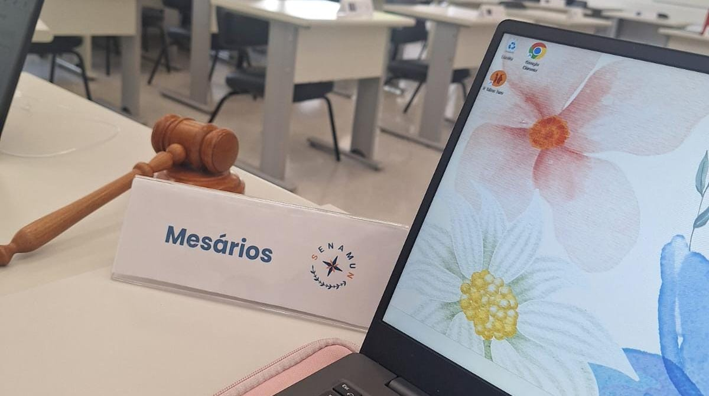
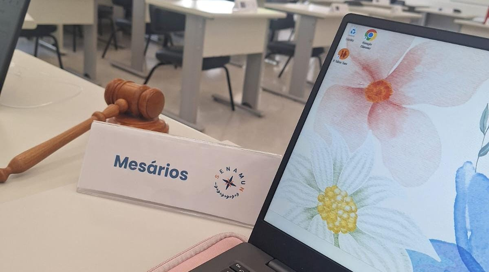
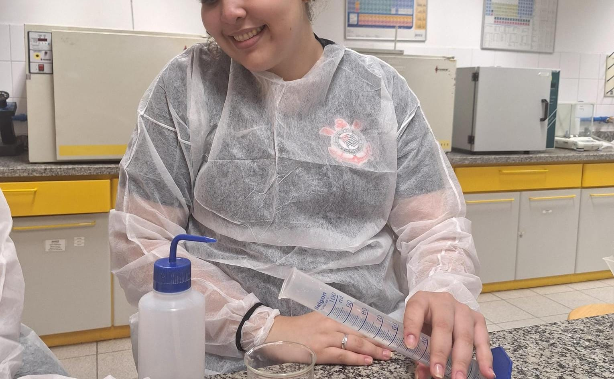
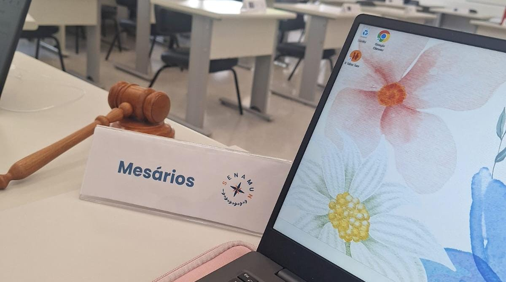
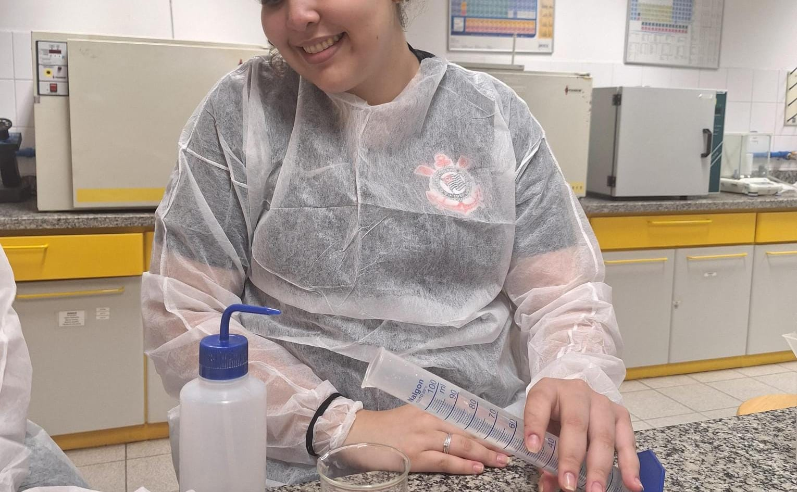
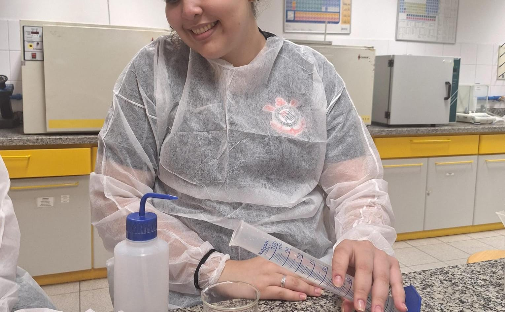
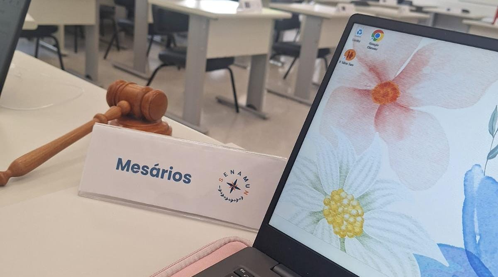
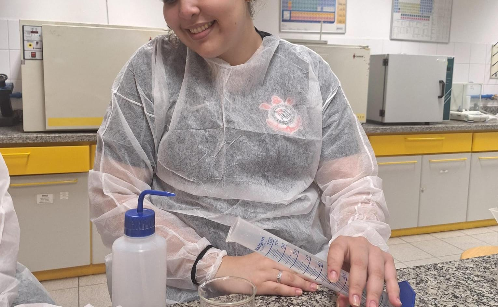

Áreas do Saber
 

 





Em linguagens, acredito que deve ter sido maravilhoso não só para mim, mas para todos que viveram essa experiência, o Maracatu Rural, orientado pela professora marcela durante nossa mostra cultural de 2024. Desenvolver habilidades de costura, pintura e dança foi muito importante para meu desenvolvimento pessoal e para meus hobbies.
Ciências Humanas se fez minha matéria favorita ao longo desse anos, e durante o terceiro ano, em uma de nossas integradas, aconteceu a simulaçâo da onu que pude participar sendo Chair, e foi e será ainda uma experiência única, pois esse tipo de habilidade irá abrir portas para o meu futuro, e poderei realizar meu sonho de trabalhar na área de humanas e ter uma carreira bem sucedida!
A matemática apesar de não ser minha área favorita, se tornou leve e divertida por estar com o professor e agora nosso paraninfo, Clóvis. Acredito não ter um projeto favorito em matemática, pensando que todas as aulas me agradaram, mas gostaria de dar um foco especial para as aulas com fono em vestibular que foram essenciais para meu desempenho durante as provas, os assuntos desenvolvidos pelo Clóvis, nos trouxeram muito conhecimento, e sempre serei grata por isso./p>
As Ciências da Natureza nunca foi meu forte, mas gostaria de dar um destaque especial a esse ano que tivemos como professora de química a francisca, que nos instruiu com êxito, e fez química se tornar algo muito divertido e leve. Meu projeto favorito sem dúvidas foi extrair o DNA da banana, apesar das outras aulas em laboratório ter sido tão divertidas quanto. E não poderia deixar de mencionar as aulas de biologia e física que junto com o thaioa e o Robson, pudemos nos aprofundar curiosamente em cada assunto.